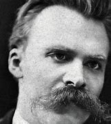

Des Mouches de la place publique
Fuis, mon ami, dans ta solitude ! je te vois étourdi par le bruit des grands hommes et meurtri par aiguillons des petit
né le 15 octobre 1844 à Röcken, en Prusse, et mort le 25 août 1900 à Weimar,
en Saxe-Weimar-Eisenach, est un philosophe, critique culturel, compositeur, poète, écrivain et philologue allemand dont l'œuvre a exercé une profonde influence sur l'histoire intellectuelle contemporaine.
Il commence sa carrière comme philologue classique avant de se tourner vers la philosophie. En 1869, à l'âge de 24 ans, il devient la plus jeune personnalité à occuper la chaire de philologie classique de l'université de Bâle
- Il démissionne en 1879 en raison de problèmes de santé qui le tourmenteront presque toute sa vie, puis achève la plupart de ses écrits fondamentaux au cours de la décennie suivante.
- En 1889, à 44 ans, il est victime d'un effondrement et, par la suite, d'une perte totale de ses facultés mentales. Il vit ses dernières années sous la garde de sa mère, puis chez sa sœur Elisabeth Förster-Nietzsche.
- Il épouse Franziska Oehler (1826-1897), fille d'un pasteur, en 1843. Ils ont deux fils : Friedrich Wilhelm et Ludwig Joseph (1848-1850), et une fille, Elisabeth Nietzsche (1846-1935).
Extraits de l'oeuvre de Nietzche
